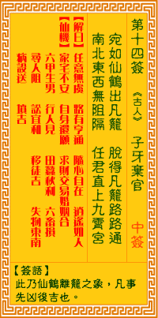

观音灵签第十四签 【子牙弃官】 |
 | |||
宛如仙鹤出樊笼 脱却羁縻处处通 南北东西无障碍 任君直上九霄中 |
||||
| 【吉凶】 | 大吉 | 【宫位】 | 卯宫 | |
| 【签语】 | 此卦仙鹤离笼之象，凡事先凶后吉也。 | |||
| 【解曰】 | 任意无虞 路有亨通 随心所欲 逍遥如人(神) | |||
| 【仙机】 | 此签家宅不安，自身还愿，求财合，交易合，婚姻合，六甲生男 ，行人见，田蚕秋利，六畜损，寻人阻，公讼宜和，移徙吉，失物东南， 疾病殁送，山坟吉。 | |||
| 【详解】 | 好似仙鹤飞出了牢笼，终于挣脱长久羁绊痛苦的束缚;无论东西南北都将畅行无阻，任你展翅翱游直上九霄云外去。从心无虑，远达亨衢，道心自在，任意所如。此签白鹤冲霄之象，凡事先忧后吉。 为白鹤冲霄之象也。凡事先忧后吉之大吉签。功名成就。生意鼎盛。婚姻完满。财路亨通之时。宜再多阅圣贤书。修吾身。积吾德。必有喜讯连连之日来也。要之。从心无虑远达亨衢道心自在任意所如者耶。 此签有”公私分明”之意。提醒当事人，豁达大度。有时我们会面临到必须和某人相处共事，偏偏此人曾与你结怨、旧恨未消。在此情境之下，如何化解心中的不快与尴尬，才是最难解的课题，考验当事者的智慧。换个角度思考：很多争执误会都是在不得已或无心的情况下发生。所谓”退一步海阔天空”，应该先抛开心中旧有的成见，同时勿预设太多立场，尽释前嫌。凡事以大局为重、就事论事，不计较个人恩怨。放宽心胸、放大格局，只要心中坦然，必可无所覊绊、从心无虑。 | |||
| 【典故】 | 姜子牙（姜太公）离开昆仑山后，住在宋异人家，一无所成，样样失败，时已七十二岁了，火烧琵琶精后，被推荐在纣王宫廷谋一小官做 。一天纣王要兴建鹿台以宣淫行乐，请子牙设计建造。子牙反对，同时向纣王谏了一番，因畏罪遁水而逃。弃官回到宋异人家。后来子牙到胃水钓鱼过日子，等待时机。 | |||